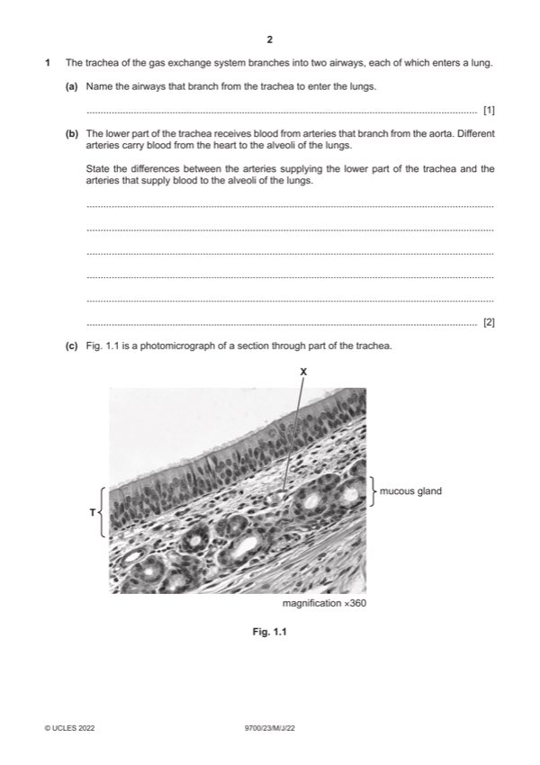

Question 1

Original paper page 2
Part 1(a) — solution
bronchi ; A bronchus 1
Mark points
- Include the ideas shown in the solution above.
Part 1(b) — solution
any two from: 2
trachea v alveoli
trachea alveoli
(carries) oxygenated blood or (carries) deoxygenated blood ;
A (carries) blood with more oxygen A described
A (carries) blood with, less / little, oxygen
I no oxygen
lower concentration of carbon dioxide or higher concentration of carbon dioxide ;
blood at higher pressure or blood at lower pressure ;
(part of the) systemic circulation (part of the) pulmonary circulation
or or
branch from the aorta / (originates) from, left ventricle v pulmonary artery
or
from right ventricle (of heart) ;
2022 Page 8 of 18
9700/23 Cambridge International AS & A Level – Mark Scheme May/June 2022
Mark points
- Include the ideas shown in the solution above.
Part 1(c)(i) — solution
allow from, labelled / annotated, diagrams drawn 3
any three from:
ciliated epithelium / ciliated epithelial cells / ciliated cells / cells with cilia ;
detail (of ciliated epithelial cells) ;
e.g. columnar / description
cilia, only facing the lumen / on apical lumen / lining the lumen
I on surface of tissue
goblet cells ;
AVP ; e.g. basement membrane
pseudostratified (epithelium)
large nuclei I visible / clear, nuclei
basal nuclei (in goblet cells)
nucleoli visible within nuclei
2022 Page 9 of 18
9700/23 Cambridge International AS & A Level – Mark Scheme May/June 2022
Mark points
- Include the ideas shown in the solution above.
Part 1(c)(ii) — solution
blood vessel / capillary / venule ; 3
plus two from:
presence of red blood cells (in the lumen) ;
endothelium / endothelial cells ;
A flat cells accept for endothelial cell
A cells with, prominent / bulging / AW, nucleus
very thin / one cell thick, walls ;
ref. to small size, qualified ; e.g. narrow lumen / comparison to other tissues
alternative
endothelium / endothelial cell ;
plus two from
flat cells ;
cells with, prominent / bulging / AW, nucleus ;
one cell thick ;
Mark points
- Include the ideas shown in the solution above.